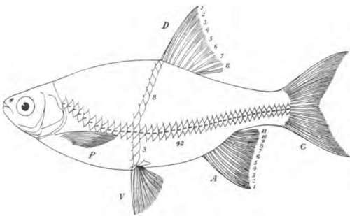
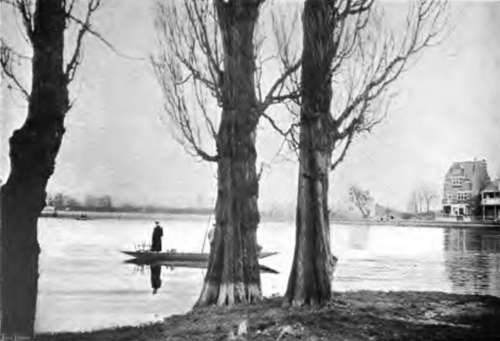
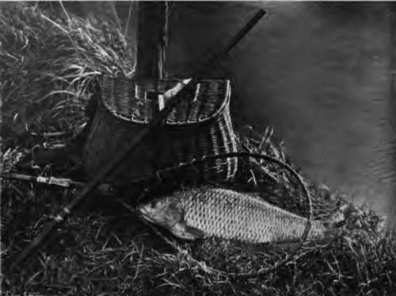

The Carp Family (Cyprinias). Part 2
Description
This section is from the book "Fishing", by Horace G. Hutchinson. Also available from Amazon: Fishing.
The Carp Family (Cyprinias). Part 2
1. Carp X Crucian Carp (Cyprinus Kollarii)
Barbels as in the carp, but smaller; scales in lateral line 35 to 38.
2. Roach X Bream (Abramis Buggenhagii)
Anal fin with 12 to 17 branched rays; scales in lateral line 43 to 50.
3. Dace X Bleak (Leuciscus Dolabratus)
Dorsal fin opposite to the space between the ventrals and the anal; the latter fin with 10 to 13 branched rays; scales in lateral line 44 to 54.
Rudd, Showing The Posterior Position Of The Dorsal Fin (D) With 8 Branched Rays, The Anal
(a) with ii branched rays, the deep body, the depth twice and 3/5 in the total length without caudal fin (c), and the large size of the scales, of which there are 42 in the lateral line, 8 between the dorsal fin and the lateral line, and 3 between the latter and the base of the ventral fin (v). The object of this figure is to explain how the fin-rays and scales should be counted in making use of the above key or synopsis. The pectoral fin is marked p.
The Latin names within parentheses are those which were bestowed on the fish before their hybrid nature had been realised.
Certain localities in Central Europe appear particularly favourable for the production of these hybrids, but they are by no means frequent in this country, and little is known of the conditions under which they are brought forth, and whether or to what extent they are capable of reproduction. Even under the most favourable circumstances they do not seem to be fertile for more than one or two generations, and it has not been possible for man to fix any of these intermediate forms as permanent races.
All our Cyprinids breed between April and the beginning of July.
The Carp (Cyprinus Carpio)
This large and variable species, the type of the family, has a very wide distribution, having spread, through the agency of man, over nearly the whole of Europe and a part of North America, where it lives in lakes, ponds, canals, and slow-running rivers with plenty of vegetation. The carp appears to be a native of temperate Asia and perhaps also of South-Eastern Europe, and to have been introduced into other parts in the twelfth or thirteenth century; it was first mentioned in England in 1496. The acclimatisation of the carp in America has been a great success, especially in the southern waters, where, the growth continuing throughout the entire year, the fishes soon attain a remarkable size. The presence of carp in Indo-China and the Malay Archipelago is probably also to be ascribed to human agency. In the British Isles the carp seldom reaches a length of 2½ feet, and a weight of 20 lbs., whilst examples of that size are quite frequent on the Continent, and others measuring 4½ feet and weighing 60 lbs. or more are on record. The fish varies much in shape and scaling, and some most aberrant varieties have been fixed by artificial selection, the principal being the king-carp, or mirror-carp, in which the scales are enlarged and reduced in number, forming more or less regular longitudinal series on the sides, and the leather-carp, in which the scales have all but disappeared, the fish being covered with a thick, leathery skin. Deformed examples are not of rare occurrence.
Although partly feeding on worms and other small forms of animal life, the carp is principally a vegetarian, and the great development of its pharyngeal apparatus renders it particularly adapted to a graminivorous regime. The longevity of the fish has probably been much exaggerated, and the statements made of carp of 200 years living in the ponds of Pont-Chartrain and other places in France, and elsewhere, do not rest on satisfactory evidence. A specimen weighing 28 lbs. and captured marked with the date 1770 was reported a few years ago in Modern Society (September 23, 1899, p. 1449).
The Crucian Carp (Cyprinus carassius), a native of Europe and Northern and temperate Asia, is doubtfully indigenous to this country, and very locally distributed in England and Ireland. It is very common in the vicinity of the Thames. It is a much smaller fish than the carp, rarely exceeding a length of eight or nine inches, but is likewise very variable in form, and the species may be divided into a number of races or sub-species. One of these, remarkable for the very short, thick head and deep body, is the so-called Prussian carp (C gibelio), often imported into ponds in this country. Another, universally known, is the gold-fish (C auratus), first produced in China, mostly a fish of aquariums and ornamental waters, too heat-loving to thrive in our large ponds, but breeding very freely in many waters on the Continent, and in America, as well as in many tropical and sub-tropical countries, into which it has been introduced as an ornament; when left to itself, however, the gold-fish soon loses its brilliant red or golden colouration and reverts to the olive-bronzy colour of the Crucian carp, to which it is too closely allied to be regarded as more than a race. The remarkable monstrous races known as fan-tails and telescope-fish produced by the Chinese and Japanese, are highly prized by aquarium keepers; some of them reach high prices in the market, and a great deal has been written on them. For a good account in the (English language we refer the reader to the book by Hugo Mulertt, of Cincinnati, entitled " The Goldfish and its Culture." The finest collection of them in this country is that kept by Captain Vipan of Stibbington Hall, Wansford.
The name of the fishes of this genus is derived from the island of Cyprus, the ancient sanctuary of Venus; this name is supposed to have arisen from observations of the fecundity and vivacity of carp during the spawning period.
Continue to:
- prev: Chapter XIV. The Carp Family (Cyprinias)
- Table of Contents
- next: The Carp Family (Cyprinias). Part 3